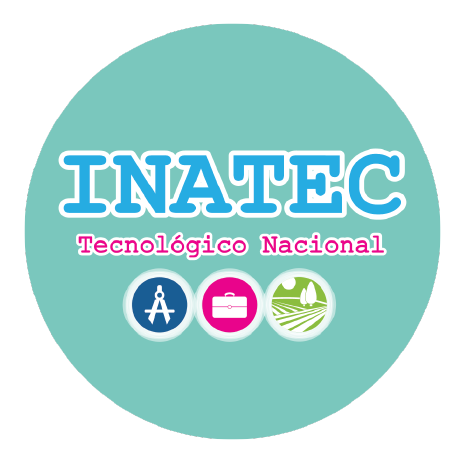

Estudiar chino en Nicaragua
 La embajada de Taiwán en Nicaragua en cooperación con instituciones públicas, ofrece cursos para la enseñanza
del idioma chino y la cultura taiwanesa. Las profesoras que imparten el idioma son nativas y altamente cualificadas
para la enseñanza del idioma.
La embajada de Taiwán en Nicaragua en cooperación con instituciones públicas, ofrece cursos para la enseñanza
del idioma chino y la cultura taiwanesa. Las profesoras que imparten el idioma son nativas y altamente cualificadas
para la enseñanza del idioma.
Esta iniciativa forma parte de los programas y proyectos que impulsa el Fondo de Cooperación y Desarrollo Internacional de la República de China Taiwán (ICDF) en Nicaragua con el objetivo promover el aprendizaje de la lengua y la cultura china en nuestro país.
Instituciones que enseñan chino mandarín en colaboración con Taiwán 
Universidad Nacional de Ingeniería
Instituto de Estudios Superiores
El curso de chino mandarín en la UNI es abierto al público, no es necesario ser estudiante o trabajador, sin embargo es por ciclos, cada vez que comienza el curso se abren dos grupos (uno por la mañana y otro por la tarde), la frecuencia del curso es de dos días por semana, hasta que el curso termina se abren nuevas convocatorias. El costo es de US $5 por nivel, cada nivel tiene una duración de dos meses. Inicialmente se paga una matrícula única de $5. El horario está sujeto a la disponibilidad de la profesora.
Contacto: Lic. Arlen Mercado
Responsable de Bienestar Estudiantil
Correo: becas@ies.uni.edu.ni
Tel.(505)2270 0973 Ext.121


Universidad Nacional
Autónoma de Nicaragua
El curso está abierto al público general. Se efectúa una selección por méritos académicos de candidatos, en la Dirección de Relaciones Públicas. Por consiguiente es requerido llevar a la entrevista su historial de calificaciones. Posterior se procederá a una preselección de 30 alumnos para seleccionar 25.
Los cursos se imparten en el Recinto Universitario Ricardo Morales Avilés (RURMA), por la profesora Yu-shan Chiang. Los horarios de estudios son lunes y miércoles de 9:00 a.m. a 11:00 a.m. y de 2:00 p.m. a 4:00 p.m., el curso tiene un costo de C$650, para el público y C$300 para estudiantes y trabajadores de la UNAN.
Contacto: MSc. Frak Llanes Gutiérrez
Coordinador de Internacionalización
Correo: frank.llanes@gmail.com
Tel. (505) 2270 0042

Universidad Nacional Agraria
No se cobra ningún monto económico para participar, ya que es parte del plan institucional de internalización de la UNA, el interesado debe ser estudiante activo de la UNA, trabajador administrativo o docente de la UNA.
Contacto: Lic. Giselle Portocarrero
Encargada de evaluación y seguimiento
Dirección de Cooperación externa
Tel.(505)2233 1501 Ext.5082
